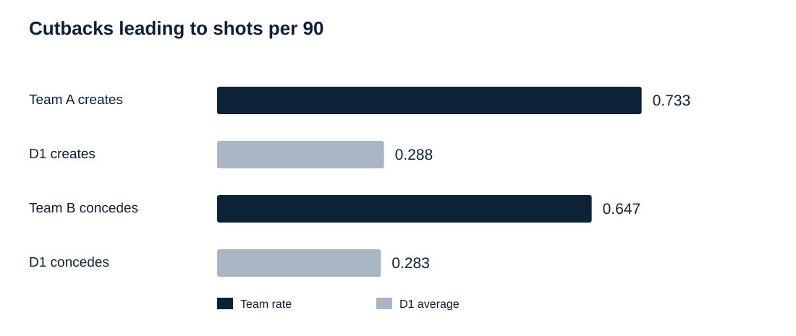
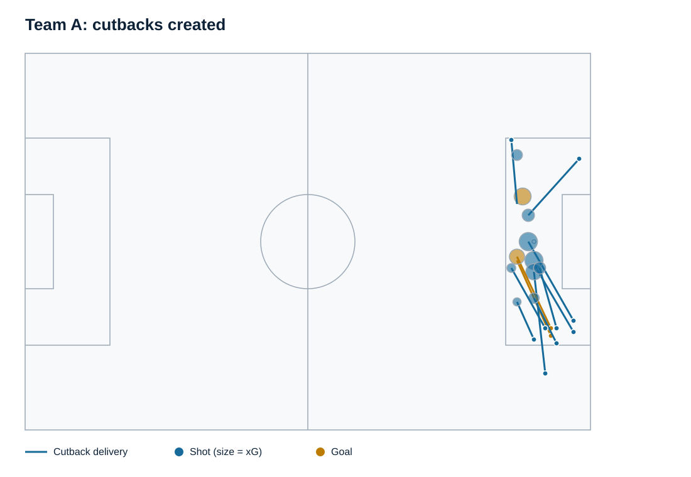
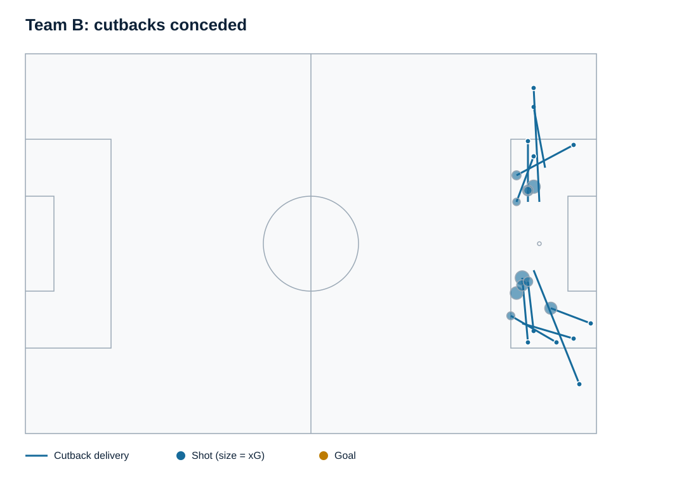

Report example
Prepare to defend the cutback.
Team A creates cutbacks leading to shots at 0.733 per 90 versus 0.288 across D1. Team B concedes them at 0.647 versus 0.283.
From a 2025 men's scouting report. Team and player names are anonymized.



Maps show 11 events per team. The event list does not include the total minutes used to calculate the per-90 rates.
Review 10 timestamped film references (5 per team)
Goals are listed first, followed by shots ranked by xG. Use the video times to find each event in your footage. Video playback is not available here.
Team A: cutbacks created
2 cutback goals and the 3 highest-xG shot examples.
| Match | Delivery | Match clock | Outcome | Video time |
|---|---|---|---|---|
| Match 03 | Player 03 | 1H 47:50 | Goal | 47:51 |
| Match 04 | Player 03 | 2H 78:15 | Goal | 90:05 |
| Match 01 | Player 01 | 2H 90:09 | Shot | 101:46 |
| Match 02 | Player 02 | 1H 6:00 | Shot | 6:02 |
| Match 03 | Player 04 | 1H 7:34 | Shot | 7:35 |
Team B: cutbacks conceded
No goals conceded in this sample. The five highest-xG shots are listed below.
| Match | Delivery | Match clock | Outcome | Video time |
|---|---|---|---|---|
| Match 08 | Player 07 | 1H 4:29 | Shot | 4:31 |
| Match 09 | Player 08 | 1H 25:03 | Shot | 25:11 |
| Match 10 | Player 09 | 2H 73:39 | Shot | 81:07 |
| Match 11 | Player 10 | 1H 3:30 | Shot | 3:38 |
| Match 12 | Player 11 | 1H 48:24 | Shot | 48:32 |
Film references available. In-report video playback is in development.